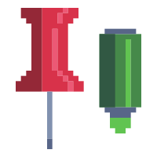
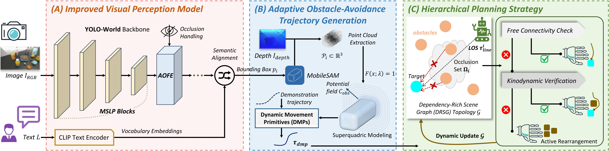
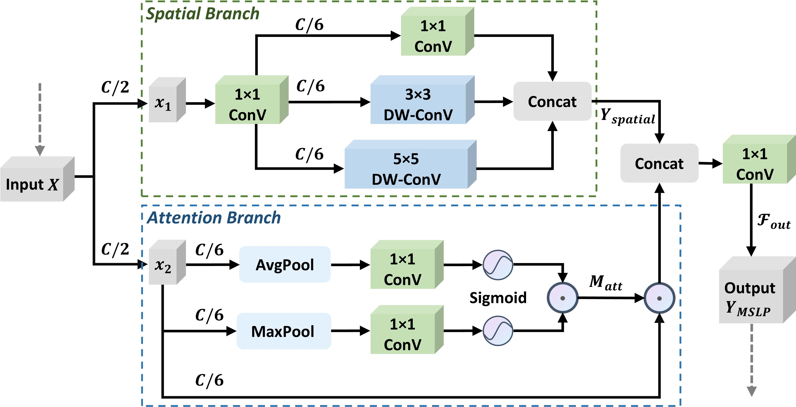
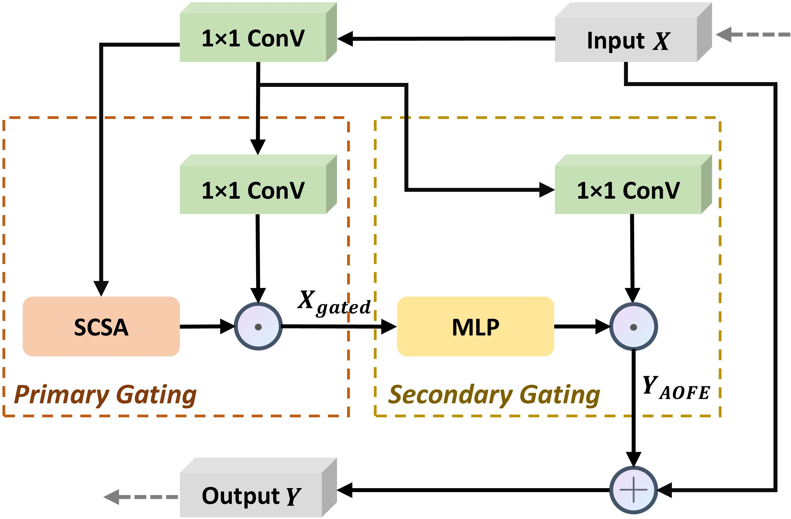
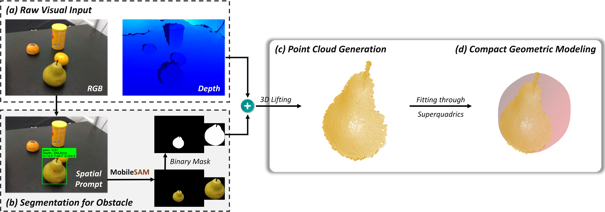
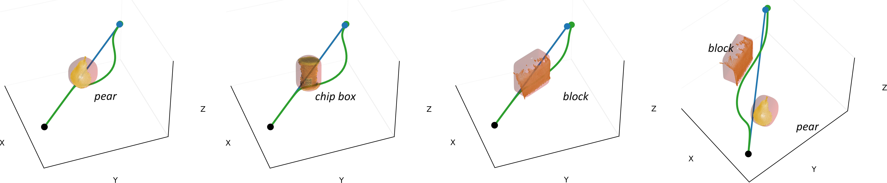
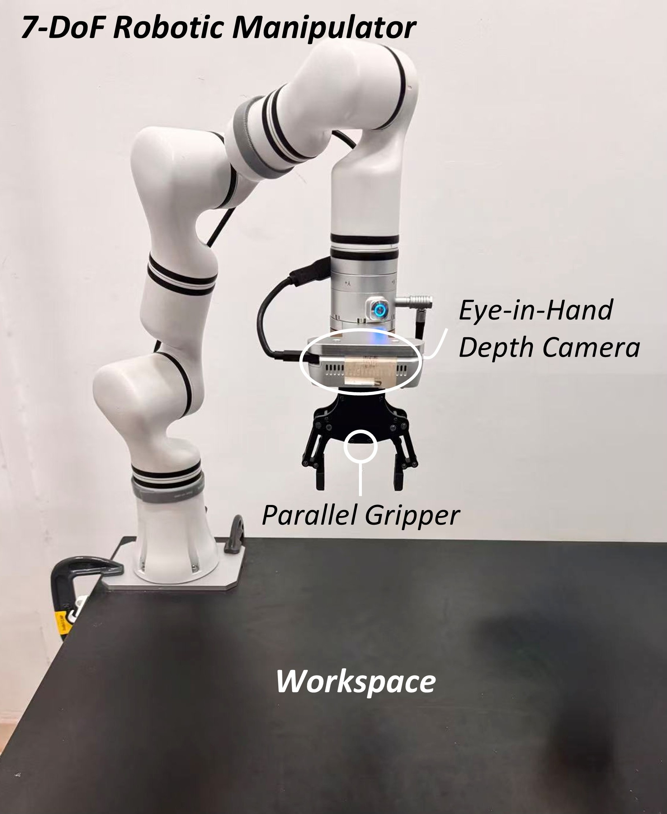
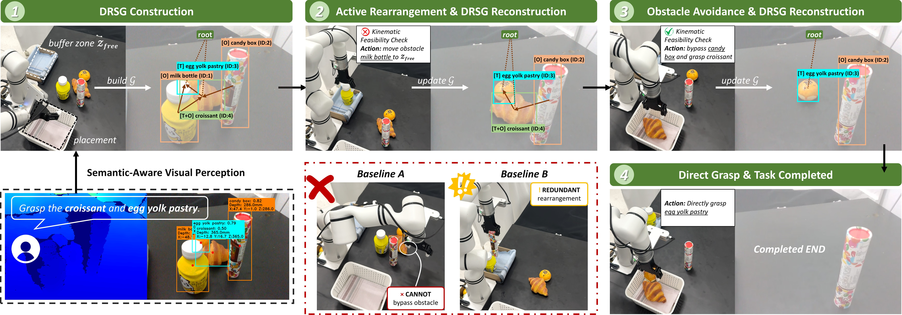

Main Contribution
We propose SHARP, a novel semantic-aware hierarchical planning framework for robotic obstacle-aware manipulation tasks under limited conditions. The main contributions of our work are summarized as follows:

: A Semantic-Aware Hierarchical Planning Framework for Robotic Active Rearrangement under Limited ConditionsRobotic manipulation in unstructured environments faces significant challenges, particularly under limited conditions such as varying illumination, occlusions, and restricted computational resources. Traditional approaches often struggle to balance robust semantic perception with efficient task planning, especially when the target is physically unreachable due to possible obstacles, requiring active rearrangement. To address the above issues, this paper proposes SHARP, a Semantic-aware Hierarchical Active Rearrangement Planning framework that couples robust vision perception with physics-aware task planning. First, we architecturally reconstruct YOLO-World by specifically optimizing the network for enhanced multi-scale perception and improved occlusion robustness. This design effectively reduces the model size without compromising detection performance. Second, we combine Dynamic Movement Primitives (DMP) with superquadric potential fields for obstacle modeling to generate adaptive, collision-free trajectories. Thirdly, a Dependency-Rich Scene Graph (DRSG) is constructed, which maps geometric occlusion relationships into topological connectivity based on physical reachability. Utilizing the DRSG, the hierarchical planner dynamically switches between collision avoidance and active rearrangement for optimal action sequencing. Comprehensive evaluations are conducted to validate the proposed framework, SHARP. Specifically, quantitative ablation tests verify the efficacy of the modified perception modules, while geometric analysis qualitatively validates the adaptive obstacle-avoidance trajectory generation. Furthermore, extensive real-world experiments demonstrate SHARP's effectiveness and robustness in complex obstacle-aware manipulation tasks.
We propose SHARP, a novel semantic-aware hierarchical planning framework for robotic obstacle-aware manipulation tasks under limited conditions. The main contributions of our work are summarized as follows:
Here we show a brief overview of the proposed Semantic-aware Hierarchical Active Rearrangement Planning framework:





The physical experimental platform employs a 7-DoF robotic manipulator equipped with a parallel gripper for task execution.

We evaluated the integrated SHARP framework in real-world multi-object manipulation tasks. To systematically analyze performance, we designed four task-level scenarios categorized by the complexity of object spatial relationships.
Here we show some representative cases with two compared baselines.
Here we show a sequential visualization of the hierarchical planning strategy executing a multi-target task with semantic conflict (Level 4) compared with baselines.

......